Attorney General of Canada, et al. v. Collins Family Trust, et al.
This transcript was made with automated artificial intelligence models and its accuracy has not been verified. Review the original webcast here.
Overlapping speakers (00:00:01): The Court. La Cour.
Justice Wagner (00:00:27): Good morning to all.
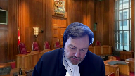
In the case of Attorney General of Canada against Collins Family Trust and Attorney General of Canada against Cochrane Family Trust, for the appellant Attorney General of Canada, Mr. Michael Taylor and Dana Anderson, for the respondents Collins Family Trust and Cochrane Family Trust, Joelle A. Nitikman QC and Jessica Fabreau.
Mr. Taylor.
Speaker 1 (00:01:08): Thank you, Chief Justice.
Speaker 1 (00:01:10): The central issue in this case is whether equitable rescission is available to a person who freely and intentionally undertakes a transaction and then later regrets that transaction because it brought unintended tax consequences.
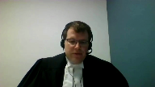
This court has already answered that question in the companion decisions of Fairmont Hotels and Jean Coutu Group.
Equity is a remedy of last resort intended to relieve from unfairness and the teaching, the ratio of those decisions of this court is that unfairness may occur when a transaction that is actually undertaken is not what a person agreed to do or what a person intended to do but having to pay tax resulting from a transaction that a person did intend to carry out is not unfairness.
It is living with the consequences of their choices even if those consequences were not anticipated.
And in this case, the chambers judge in the Court of Appeal erred by granting rescission and what they did is permit retroactive tax planning which this court has said is not permissible.
Thank you.
Justice Côté (00:02:30): Mr. Scheller, I have a question for you.
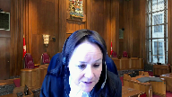
You said that this court has already answered the question that we have to decide today in Fairmount.
Is it not a fact that Fairmount is addressing rectification, which is an equity remedy too, but is not talking about rescission?
Speaker 1 (00:02:52): Yes, that’s correct.
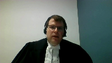
Fairmont and Jean Coutu deal with rectification, which is a different remedy, but at the core of those decisions is this court’s holding that unfairness relates to mistakes in implementing the transaction that a taxpayer or a person agreed or intended to implement.
But it doesn’t arise from tax results that are not the tax results the person wished after the fact that they had achieved.
And that is precisely what has occurred in this case.
And that ratio, that distinction is enough sufficient to dispose of the issues in this case.
This is a case of after the fact regrets and buyer’s remorse.
This isn’t a case where a taxpayer entered a transaction that they didn’t understand what they were doing, where the transaction didn’t do what they wanted to do.
Everything here did exactly what Mr. Collins wanted it to do.
He knew what the transactions were.
He knew what all the participants were doing.
And they did exactly what was intended.
Justice Côté (00:03:59): Mr. Taylor, what is the impact, if any, of the fact that in this case, CRA shared the interpretation of the Section 75-2?
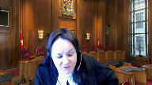
It has the same understanding of that section than the taxpayer and its advisors.
What is the impact of that? Yeah.
Speaker 1 (00:04:22): submit that the impact of that is not material to the analysis of this case.
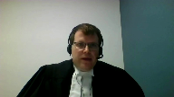
Canada has a self-assessing tax system.
Taxpayers are under the, you know, taxpayers ultimately bear the obligation to understand the tax laws and how they apply.
They retain advisors for that purpose.
They do their research.
Advisors carry insurance in the eventuality that they may be negligent.
And, I mean, I guess that the basic reality is one does not carry out transactions in reliance on the guidance of CRA.
That’s not how the law works.
Justice Kasirer (00:04:58): And Mr. Taylor, could I just, if you push your logic to the limit, would you go as far as saying that there was no mistake within the meaning of the equitable remedy of rescission here?
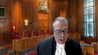
I mean, in a sense, that’s the logical endpoint of your argument.
Is it not possible to say the taxpayer took a risk, there was no advanced ruling, there was no guarantee from the CRA?
Was there even a mistake within the meaning of the law of rescission?
Speaker 1 (00:05:33): Well, Justice, I would say one could approach this case on the basis that there was no mistake in the sense that really there was a misprediction as to what the tax results would be.
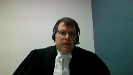
We haven’t gone that far, the Crown hasn’t gone that far, and I don’t submit that it’s necessary to go that far to dispose of this case.
I think one could accept what
Overlapping speakers (00:05:58): Bye.
Speaker 1 (00:05:59): I would argue that one could accept there was a mistake but it’s not the type of mistake that creates unfairness and that’s really the essence of of what the court must decide and that’s why we come back the crown comes back repeatedly to Fairmont and Jean Coutu because there the court has already addressed what types of mistakes create unfairness that should be remedied by equity and what types of mistakes flow from the risks that are undertaken and the reality of living in a self-assessing tax system and the reality of the legal principles that one is taxed based on what one does and not what one hopes or expects or later wishes to have done and so I would say it’s not necessary to go that far one could accept there is still a mistake here
but it’s not the kind of mistake that creates remediable unfairness.
Justice Karakatsanis (00:06:52): In terms of how far your submissions go, would your position lead to unfairness, for example, if there had been an advanced tax ruling?
Or is that not necessary to go that far either, on the facts of this case?
Speaker 1 (00:07:14): Justice, I would submit that that particular hypothetical is one the court need not consider.
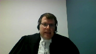
But given, you know, if you create a hypothetical where there’s an advanced tax ruling, I think we’d be in a totally different universe than we are in in this case.
Because the advanced tax ruling is the one situation where the CRA will administratively commit to administer the taxpayer in a certain way.
And then when a court decision like summer comes down, they may advise the taxpayer, you have to comply with summer in the future we’re going to apply summer but we’re not going to go back on our ruling.
And that’s a totally different scenario from here.
And one of the arguments that I, I would offer today.
I don’t know if I’ll get the chance so I’ll just make it now is that in this case there were very clear risks flagged to this taxpayer by the accountants.
They’re in the planning documents and they’re in our condensed book and one of them was.
We do not have an advanced ruling.
We do not have a guarantee the CRA will agree with us on our legal interpretations, then there were a whole bunch of others you know we’re not we’re not lawyers, this isn’t a legal opinion.
There’s no guarantee the law won’t change.
They might apply the guard we can’t predict what will happen, but there’s that very clear statement.
We do not have an advanced ruling.
And if you want that certainty from the CRA as a taxpayer, you need to get that ruling.
Otherwise you don’t have that certainty.
And that’s the law of the self assessing system.
Overlapping speakers (00:08:45): So, no, sorry, go ahead.
Speaker 1 (00:08:48): I was just going to say that would be a very, very different set of facts and you know that although the Crown disagrees with the application of the Pitt v. Holt test and we disagree with the decision of the Court of Appeal and the decision in the Palin Trust case, we would agree that in an equitable analysis every case needs to be looked at on its facts.
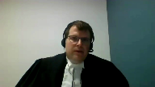
So those would be different facts and they would lead to a different analysis.
Justice Brown (00:09:15): that you actually took me to where I was going, which was Pitt.
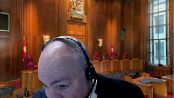
There’s obviously an element of Pitt that you would urge us to reject, which is that it leaves explicitly open the possibility that adverse tax consequences may trigger the ability to obtain rescission.
Do we need to deal with the rest of Pitt?
Do we need to deal with the test for rescission more generally?
Because Pitt does much more than leave that possibility open.
Speaker 1 (00:09:50): Uh, yes, Justice, and what I would say and what I’ve come prepared to argue with the court, would like me to, is the case law before Pitt largely aligned with what this court said in Fairmont and Jean Coutu with respect to equitable remedies.
So there were cases like, you know, you could go as far back as the Ogilvy case in the 1800s, and there’s the Slowcock’s Will Trusts case that this court considered in Fairmont, which was in around 1980, and the Gibbon and Mitchell case around 1990.
And all of those were cases where taxpayers made mistakes.
And when the courts in the UK examined those mistakes, and they were determining, do we grant relief or not?
Ultimately, all of those cases are decided on the basis of whether the transaction that was undertaken, so whether it’s a deed of gift or a deed of trust, is that what the taxpayer actually intended to do?
And did the person understand what they were doing?
And are they asking the court to go back because they have regrets, or because there was actually a mistake, and now they’re bound to something which wasn’t what they agreed to do in the first place?
Justice Brown (00:11:04): But to be clear, we don’t need to go there if we don’t have to.
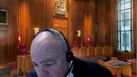
To dispose of the cases you propose, we can simply say Fairmont and Jean Coutu stated principles of general application.
They operate here.
Equity cannot be used to engage in retroactive tax planning so as to avoid an unanticipated adverse tax consequence.
Speaker 1 (00:11:28): I would say that is entirely sufficient to dispose of this case and the point I was trying to make was basically Pitt, in terms of the fundamental analysis, Pitt aligns with those cases in that it looks for a mistake and it looks at how serious the mistake was.
But where Pitt pushed the envelope beyond where Canadian law can go is the idea that one can rescind a transaction solely because one is dissatisfied with the tax outcome or it’s not what the person intended, how they wanted to be taxed.
And frankly Pitt can’t stand alongside Fairmont and Jean Coutu, so either this court will need to engage in some sort of reconciliation of the two cases or that reach of Pitt should be rejected in Canada.
And of course the crown says it should be rejected because it’s inconsistent with the fundamental principles that underlie Fairmont and Jean Coutu and those trace back to our self-assessing system.
Overlapping speakers (00:12:35): And I think at this point, it’s worth.
Speaker 1 (00:12:36): pointing out that the Canadian tax system and the UK tax system are different and Pitt is a function of its context.
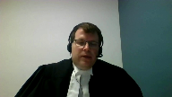
Pitt arises in a different tax system where you know the UK doesn’t have a principle like the Shell principle that this court cited in Fairmont.
The UK has judicial doctrines where courts will disregard the legal forms of transactions.
The UK has gone away from the Duke of Westminster principle that this court has recently restated as a bedrock principle of Canadian tax law.
The UK legislation explicitly contemplates that transactions can be set aside under other laws and that the tax results will change accordingly.
Well our tax laws don’t do that.
It’s not to say that courts can’t modify transactions but our tax laws don’t contemplate that.
And then on the facts of Pitt as well I think it’s useful to recall that the UK Supreme Court was dealing with a different remedy, something they call the rule in Hastings v. Bass which is a trust law remedy and it seems clear that in expanding rescission the court was attempting to provide taxpayers there with a remedy that wasn’t available under the strict application of the Hastings-Bass rule and I don’t think we need to get into the Hastings-Bass rule in this hearing
but it’s a principle that doesn’t exist in Canadian law and
so Pitt is very much a function of its context and it shouldn’t simply just be transposed into Canadian law.
And there’s one more point I want to make about that which is going back to the case of the Pallant Trust which was the first case where Pitt was applied.
I want to be clear having argued the Pallant Trust case as well the Crown did not concede in the Pallant Trust case that Pitt v. Holt should be applied as the law in Canada.
The Crown was content to proceed before the BC courts on the basis that even if Pitt v. Holt was accepted the transactions were aggressive tax avoidance and they would fall within that exclusionary language in paragraph 135 of Pitt.
So whether Pitt should be the law in Canada has not been argued before the courts before this case until now and similarly Pallant was decided before Fairmont and Jean Coutu so the groundwork was different the landscape shifted with this courts decisions in 2016.
So I just want to be clear that there hasn’t been a concession at any point that Pitt v. Holt should be the law and our position is it shouldn’t.
Justice Kasirer (00:15:13): Can I ask you about that point you raised about the characterization of the arrangement as an aggressive plan of tax avoidance?

And I’m wondering how that sits alongside with the Duke of Westminster that you’ve just invoked.
If one says, as at least I understand the BC Court of Appeal to have said here, that at the time it was undertaken, the arrangement put in place by the Collins Trust was not aggressive tax avoidance because the taxpayer was relying on a position endorsed by the CRA for a number of years.
So in that sense, while it may have turned out to have been mistaken, that’s one thing.
But is it best characterized as aggressive tax avoidance in this rather odd context where at the time it was undertaken, it wasn’t aggressive tax avoidance?
Speaker 1 (00:16:19): Thank you for asking that question, Justice.
This is an important fact in this case, but I do want to be clear that if the court rejects the PIT test, then whether this is aggressive tax avoidance or not is not really material to disposing of the case.
What matters is what the taxpayer agreed and intended to do.
If one accepts the PIT test, then the UK Supreme Court says you need to look at aggressive tax avoidance.
And we simply disagree with the BC courts that this is not aggressive.
And if you’ll give me a couple of minutes, I’ll explain why.
First, what the taxpayer did in this case, and it’s explained nicely in the Satoma case excerpts that I provided to the court in the condensed book, is the taxpayer uses an anti-avoidance rule.
75-2, its purpose is to prevent someone from splitting tax by moving income into a trust when they have the ability to economically benefit from that property in the future or to take it back or to direct it to someone else.
They use it to access a tax benefit.
And this court said as far back as the Lipson case in 2009 that using an anti-avoidance provision to achieve tax savings is turning it on its head.
And Lipson was a GAR case, and in this court the majority said, well, that’s actually abusing a provision.
So I would say here you have a plan to protect assets.
And asset protection is achieved by moving assets out of the company.
It doesn’t require a reversionary trust specifically created to trigger an anti-avoidance rule.
It doesn’t require shares being moved through a holding company for that purpose.
And it doesn’t require anything to do with the Section 112 deduction.
All of that is a tax plan grafted onto an asset plan.
And it’s the inverse use of the anti-avoidance rule that is patently aggressive.
And the Federal Court of Appeals says in Satoma it’s not just aggressive, it’s abusive.
Thank you.
Justice Côté (00:18:29): Mr. Taylor, in Satoma there was no such thing as the Statement of Agreed Facts, as we have in this case, and also in Satoma there was a concession that it was an avoidance transaction, and we don’t have that concession here.
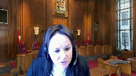
As you just mentioned, there was an asset protection objective, and the second thing was it had to be without any tax impact.
You seem to compare the facts of Satoma to this case, and we have different facts in this case.
Speaker 1 (00:19:05): Justice, your question also raises important points and
Overlapping speakers (00:19:10): Uh…
Speaker 1 (00:19:11): I will answer those.
I’d just like to make a final comment to Justice Kasir’s question, which was that the taxpayer was relying on the CRA’s technical interpretation of 75 sub two for a completely different purpose than what the CRA had publicly stated in the past or ruled on.
Remember there were rulings about First Nations bans putting assets in trust.
The purpose of those structures was for tax exempt entities to ensure that income earned in a trust did not become taxable.
And this plan is intended to take taxable income and render it tax-free to pass through to the shareholder without dividend tax.
And so to say that it was undertaken in reliance on the CRA’s public rulings is simply not accurate.
The CRA did not issue rulings on this type of transaction.
It was a totally different transaction with totally different policy implications that they did rule on in the First Nations matters.
And I mean, the reality is, if you really wanna know what the CRA is gonna do, you get a ruling from them and these guys didn’t and they consciously chose not to.
And I would suggest they chose not to because they knew based on public statements by the CRA as early as 2006, they knew they were never gonna get a positive ruling on this transaction.
Now, Justice Cote, your question, there’s two things I wanna say in response to your question.
And the first is, Pitt doesn’t make abusive tax avoidance under the GAR, the issue, it makes aggressive tax avoidance.
So whether or not the GAR would apply to this transaction isn’t really material to the Pitt analysis.
The reason we go to Satoma is because the Court of Appeal has explained how this structure is aggressive.
And that is enough under Pitt to exclude it from equitable relief.
Now, the reason why the CRA argues in its factum that Satoma in this case are not distinguishable is because the points raised by the chambers judge to distinguish the cases are baseless.
They’re based on errors of law.
The agreed fact in this case is that the overall plan had two purposes.
But in a GAR case like Satoma, each single transaction needs to be analyzed for its particular purpose.
And that is what the courts did in Satoma.
And that is what the chambers judge ought to have done in this case, if he was going to attempt to distinguish the Satoma case from this case.
And there can be no serious argument that every single transaction in this case had a primary asset protection purpose.
It’s very clear that a prepackaged tax avoidance plan was grafted on to a trust and asset protection structure.
And if the chambers judge had properly applied the Income Tax Act, Section 245, and looked at every step of the transaction individually, then he would have been bound to conclude that some of those transactions contributed nothing to asset protection.
Their sole purpose was tax avoidance and there would have been an avoidance transaction and there would not have been a basis to distinguish the Satoma case.
But again, if we go back to what the UK Supreme Court said in Pitt, this isn’t about whether the GAR would apply.
This is about whether this is aggressive tax avoidance pushing the envelope because according to that court, that fact affects the equities.
And we would say here, it is aggressive.
And to suggest that this was not aggressive because the CRA had ruled on the application of 75-2 in First Nation asset protection structures, I’m sorry, that’s not a fair reading of those rulings and it’s not a fair application of those rulings.
The real answer should have been, the advisor should have gone and got a ruling from the CRA that says, yes, you can do this.
And then they could have said to their client, this transaction is risk-free, go ahead.
But they didn’t and they told him, here are your risks.
And he took those risks.
And they told him, here are your risks and he took those risks.
Justice Karakatsanis (00:23:21): Can I ask you, I’d like to go back to the issue of the framework, what you’ve said the test for equitable rescission should be, that it, and I’m looking at your, your fact from kind of page 24 and following that the test for equitable rescission is a voluntary should focus on what a person agreed to do, or intended to do.

I understand your submissions about unfairness in a tax context, where the focus is on the consequences, the tax consequences of an agreement, but I just worry that your focus on what they agreed to do is one that makes sense in the context of rectification, where somebody may have the documents do not reflect what they actually agreed to do.
But in the context of rescission.
Why do we have to reject the idea that there might be a fundamental mistake about something relating to consequences, for example, that they’ve done what they agreed or intended to do, but their unfairness might arise as a result of a fundamental mistake.
Why do we need to reject that in order to focus on what you’re pointing to here which is unfairness relating to tax consequences.
I’m just having trouble with the test that you’re proposing that it’s about agreement or intention.
When, when that makes sense and rectify vacation context, but less so in the rescission context.
Speaker 1 (00:25:02): Justice Carrick-Consonance, I think I’m going to submit that the answer to your question lies in Justice Brown’s reasons in Fairmont, which were that people agree to undertake transactions.
We agree to do legally significant steps and events.
We don’t agree to how we’re taxed, that’s external to what we do and agree.
It just applies based on what we do or what transactions we enter into.
And with respect, it’s not that difficult to apply the Fairmont reasoning in a rescission framework and the courts haven’t struggled to do that.
In the Gibbon and Mitchell case, Mr. Gibbon signed a deed. He gave
Overlapping speakers (00:25:51): Uh, you know,
Speaker 1 (00:25:52): he gave rights in property, that wasn’t what he intended to do.
And the court had no difficulty saying the transaction that was documented and signed off on is not what Mr. Gibbon intended and can be set aside.
And you can go as far back as the Ogilvie case, where Mrs. Ogilvie gifted or donated property to a charity and then went and said, well, this isn’t what I intended.
I didn’t expect these things would happen.
And the court had no difficulty examining whether or not her intentions were actually carried out or whether or not the transaction strayed from those intentions.
And I would submit that you combine those two factors.
The fact that the income tax system is not a smorgasbord.
I can’t go in and pick and choose how I’m taxed.
I can pick and choose my transactions, but I have to live with the consequences of those transactions.
And the fact that until Pitt, the courts were able to apply this test.
They were able to analyze the evidence and analyze what a taxpayer agreed or intended to do and whether the transaction accorded with it.
And I’d say Pitt is providing us a remedy to a problem that didn’t really exist in Canada.
Another case that I would refer the court to is from British Columbia.
It’s the John Horvath case that we’ve cited.
Mr. Horvath signed a trust deed.
He had intentions to give an interest in income from property to his children.
And the notary prepared him a deed that actually had him dispose of his property.
And the court didn’t struggle to conclude, they’re reaching the conclusion that the document he signed was not what he intended to do.
And so the argument I would make is Fairmont recognizes that true unfairness is being bound to something you didn’t agree to do, or you didn’t intend to do.
Because now the documents are signed and the common law says, you’ve signed the documents, you’re stuck with it.
That is unfairness that equity will assist with.
But where you do what you intended, and you know what you’re doing and everything goes according to operationally, everything is implemented according to your intention.
And you get taxed in a way you didn’t expect.
Well, that’s outside what you agreed to do.
And so that’s a different kind of result.
And that’s not fairness that equity will assist with.
OK, Mr. Taylor.
And I’d like to circle back.
Justice Rowe (00:28:21): Mr. Taylor, I want to pose a question with respect to what I would call the structure of your argument.
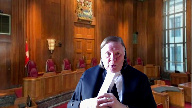
You’ve said to us at the outset that Fairmont and Jean Coutu have essentially already decided this not by addressing specifically rescission, but by the underlying principles being equally applicable to rescission as they are to rectification.
That’s what I understood your initial submission to be.
The general statement of the law relating to rescission, it seems to me, is a question that the court only needs to address if we do not accept and we’re not persuaded by your initial proposition.
If we are not persuaded that this has already been decided in effect by Fairmont and Jean Coutu, then we would have to go to pit and hold.
I note pit and hold, pit v. hold, that’s how Americans speak.
But we’d have to go to pit and hold and say, get into the general statement of the law of rescission, which of course brings us into a whole range of different issues which go far beyond the Operation Income Tax Act, because equity is a very deep well indeed.
So I’m just wondering whether, have I understood the structure of your argument correctly, that if we are persuaded by our initial proposition, this has essentially been decided by Fairmont and Coutu, we don’t need to delve into the general operation of equitable rescission, but if we’re not persuaded by that proposition and we need to address pit and hold, then we may have to turn our minds to the operation of equitable rescission.
I don’t know if that was clear.
Speaker 1 (00:30:39): Yes that was clear and that’s a fair statement.
You know I would offer to you that Pitt sets out a test as I said earlier which largely aligns with the case law before Pitt and what courts have in Canada have done.
Is there a transaction was it entered into on the basis of a mistake?
And one of the issues that Pitt and Gibbon and other cases dealt with is can the mistake be a mistake about the law or can it does it have to be a mistake about the facts?
And Pitt says no it can be a mistake about the law.
All of that is largely consistent with the pre-Pitt cases and with Canadian case law.
Where Pitt departs is then accepting well
yeah you know where you’ve done what you intended to do
and you knew what you were doing and everybody wanted it to work this way and it worked that way but you didn’t expect the tax result then that is unfairness in an equitable sense.
That that’s the issue the court will have to deal with is in a tax context so where where you don’t have an error in the transaction itself you just have a misprediction or a failure to anticipate the tax consequence.
Will that ever be enough to create unfairness that equity will step in and relieve?
And I would also submit how do you how do you fence that in to prevent everyone from coming forward and saying I didn’t anticipate this tax I don’t want to pay this tax I wouldn’t have done the transaction otherwise and you can see in some of the articles and commentary that we provided to the court from the UK although the UK Supreme Court emphasized the need for a rigorous analysis of the facts the UK courts have been unable to close the barn door and rescission is routinely granted for tax reasons and that just goes directly against the principles this court has endorsed in Fairmont and other cases.
You know the Duke of Westminster says taxpayers have the right to choose how to structure their affairs so as to pay the least amount of tax
but once they do that then they need to live with it
and and you know in for example in the Envision case which I’ve provided in our condensed book Justice Rothstein said if you do it right you can save a lot of tax
but if you do it wrong you don’t save tax
and you have to live with it you don’t get to go back and try try again that’s essentially the message of Fairmont.
Canadian law allows a taxpayer to make that choice to reduce their tax to structure their affairs a certain way but they don’t get a do-over they have to live with the result and if there’s a mistake about how the law applies then they pursue other remedies.
Can I ask you to come back?
Justice Karakatsanis (00:33:30): to this just quickly.
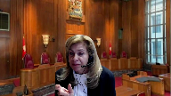
I’d asked you about a tax ruling before and I worry the way you’ve just stated it by saying will it ever be enough to be unfairness?
Will it never?
Your absolute terms of the way you’ve stated the test is inconsistent I think with the answer you gave me about an advanced tax ruling.
I mean why do we have to say ever or never when I think the example of an advanced tax ruling is an example where it may be unfair?
Speaker 1 (00:34:05): Well, Justice, I would submit that it’s extremely unlikely for me as a tax practitioner to envisage a situation where the CRA grants someone a ruling.
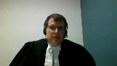
And, you know, recall a ruling is intended to be a binding commitment by the CRA.
A taxpayer goes to the CRA and proposes a transaction and provides all the details of who the participants are and what will occur and what the results will be.
And the CRA reviews it.
And I think they even pay a fee for that.
And then if the CRA grants a ruling, you know, it comes with a list of conditions.
It says if you do what you told us you would do and if everything complies, then we will we will administer the act accordingly.
And the purpose of the ruling is to give that certainty.
And so I guess what I’m saying is it’s hard to imagine a situation where the CRA goes back on a ruling absent, perhaps, you know, a retroactive legislative change by parliament, which there’s nothing the CRA can do about something like that.
But other than that, it’s very hard to imagine a situation where there’s a ruling and the CRA goes back on the ruling
and then we say, well, it’s not unfair to stick it to the taxpayer here.
Overlapping speakers (00:35:24): you know.
Speaker 1 (00:35:25): In fairness, I don’t think that that’s at all a realistic hypothetical.
And in response to the other part of your question, I’m just
Overlapping speakers (00:35:35): I’m asking you that just to test your statement of principle.
I understand.
Speaker 1 (00:35:42): and you’ve asked me, does the court need to say it will never be unfair?
It’s not, I mean, it’s not for me as counsel to tell the court what the court needs to say in articulating the principles.
You’re simply asking.
Justice Brown (00:35:56): You’re simply asking, as I understand it, you’re simply asking us to apply what we said to the same sort of level of categorization or in an equally categorical matter as what we said in Fairmont and Jean Coutu.
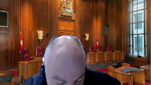
In Jean Coutu, we said tax consequences flow from legal relationships or transactions.
In Fairmont, we said taxpayers should be taxed on what they actually did, not what they would have done if they’d known better.
So in as much as those may admit or not admit of exceptions, isn’t that what you’re asking us to do?
Speaker 1 (00:36:33): Yes Justice Brown, that is exactly what the Crown is asking the Court to do.
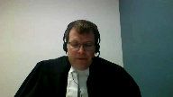
And it may well be that the logical extension of those principles is that being wrong about the tax will never give rise to remediable unfairness and equity.
Overlapping speakers (00:36:52): out.
Speaker 1 (00:36:52): I don’t know that the court needs to say that
but if the court leaves that door open then someday there will be another case that comes back to the court where a taxpayer says I didn’t expect the tax I should be entitled to rescind and this court will be back you know eventually dealing with the same issue.
Justice Wagner (00:37:09): You
Overlapping speakers (00:37:09): Yes.
Justice Wagner (00:37:10): Taylor, may I ask you a question?
Of course.
Justice Martin (00:37:14): Yeah, in terms of, I’d just like to know, does anything in your analysis turn on the fact that in Pitt and Holt and many of the other cases, it was the makers of the voluntary disposition that we’re seeking rescission, and whereas here it’s the recipients?
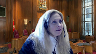
Justice Wagner (00:37:38): Um…
Speaker 1 (00:37:39): Justice, the Crown hasn’t made anything of that, you’ve pointed out a difference.
And I know you haven’t.
Justice Martin (00:37:48): made anything of it in your factum and that’s why I’m asking the question is it of any concern to us that that the the that someone who wasn’t the the settler or the maker is is seeking rescission.
Speaker 1 (00:38:06): I guess what I’d say is, in this case, the party seeking rescission is the party that has to pay the tax.
But I wouldn’t go so far as to say that that really matters because I think we all know here that these are closely held family companies and trust entities that are all under the common direction by one person.
And so I’ve proceeded on the basis that all of these entities are proxies for Mr. Collins will.
Overlapping speakers (00:38:35): you know.
Speaker 1 (00:38:35): will and intention and so we haven’t we haven’t made anything of it and on these facts I I don’t see how it would affect the analysis.
It would be different if there were actually discrete interests and there was more of a commercial exchange or even a contractual exchange and you know you might not even be in the pit and hold world then.
Justice Rowe (00:38:57): Just quickly, Mr. Taylor, we’ve gone off on this different set of facts about what if there had been an advance ruling.
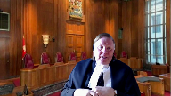
And I don’t want to take too much time on it because it simply isn’t the case before us.
But I just wonder whether the answer is that if an advance ruling had been given and the taxpayer relied upon it, and then the CRA essentially said, no, we’re going to assess you, notwithstanding the advance ruling, probably would not the best avenue for the taxpayer be Section 23 of the Financial Administration Act.
And if that was unsuccessful, then you might seek your equitable remedy.
Speaker 1 (00:39:47): That could well be.
Potentially, there would be a remedy under the federal court act in some sort of action or some sort of judicial review, or possibly an appeal under the Income Tax Act.
I can’t speculate today exactly what that avenue would be for the taxpayer if there were a ruling and then suddenly it wasn’t being honored.
But as you’ve said, that’s far from the facts of this case.
And as I said to Justice Karakatsanis, it’s really hard to conceive of a situation where that actually happens, where a ruling is given, a favorable ruling is given, and then the administrator goes back on it, where the taxpayer has complied with everything.
Justice Côté (00:40:33): Mr. Taylor, on that advanced tax ruling question, although there was none here, we know from the file that CRA changed its interpretation of Section 75-2 only after the decision of the Federal Court of Appeal was released in summer.
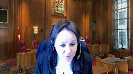
Because I, and correct me if I’m wrong, the position taken by CRA before the Federal Court and the Federal Court of Appeal in summer was to maintain the same interpretation of Section 75-2 than the one it had before in its interpretation built-in.
It’s even the CRA who appealed to the Federal Court of Appeal to have its interpretation of Section 75-2 maintained, and they lost.
Overlapping speakers (00:41:20): Yes, Justice, that’s correct.
Is it not unfair?
Justice Côté (00:41:24): is it not unfair to say to the taxpayer, oh we cannot give you a decision, you’re responsible for your own mistakes when the interpretation of the consultant, the tax advisors, the taxpayer were exactly the same than the CRE’s interpretation and CRE fought until the Federal Court of Appeal to have that interpretation maintained.
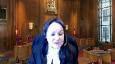
Speaker 1 (00:41:51): Justice, I want to make two points in answer to your question.
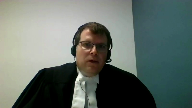
The first is, no, it’s not unfair because when a taxpayer does their transaction, they’re not doing it in reliance on the CRA.
That’s not how our tax system and our legislation works.
They are relying on their own understanding of the Income Tax Act.
And so you don’t get to come back and say, well, the CRA said this publicly
and so I thought it applied and I relied on it
and it’s not fair that the Act applies differently.
That’s just fundamentally not how the Income Tax Act operates.
And the second point I want to make is that’s not what happened in this case.
In this case, they undertook a transaction which, you know, MNP are experienced tax planners.
When they put this structure together, they ought to have known that as far back as 2006, the CRA said publicly, you can’t do this.
We’re coming after you with the gar if you do this.
And you can look, Justice, in the record at the audit letters from the auditor proposing to the taxpayer here, we’re going to reassess you.
And even before the Sommerer case was settled and, you know, decided in the Federal Court of Appeal, even when the CRA was still arguing that 75-2 would apply, you know, the auditor was writing to this taxpayer saying we’re going to reassess you under the gar.
They were never okay with this transaction.
They were never going to let this transaction go without challenge, regardless of what happened to Sommerer.
And so I simply reject the suggestion that there’s some, the CRA bears some sort of responsibility for the taxpayer’s predicament here and that there is unfairness in that sense.
That simply doesn’t accord with the principles of our self-assessing tax system and it’s not an accurate representation of the facts.
Overlapping speakers (00:43:49): Sorry, go ahead, Justice Jamal.
Justice Jamal (00:43:50): Well, I was just going to ask, if we’re talking about equity and fairness, isn’t it an equitable principle that there’s no estoppel against the statute?
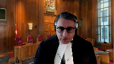
And that’s really in effect what’s being done when the statute, the Income Tax Act, is not being allowed to be applied.
It’s a different consideration when one’s dealing with an advance ruling, as Justice Roe said, because then you’re dealing with the enforcement through whatever mechanism of the ruling itself, rather than with the principle of equity.
But in this case, it is effectively, you know, an estoppel against statute because the taxpayer is saying, well, you know, everybody thought this was the situation, the interpretation bulletin said this, but it does affect estoppel against the statute, does it not?
Speaker 1 (00:44:31): Justice, I think that’s an excellent way to frame it.
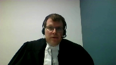
The statute applies regardless of what the CRA publicly says or not, and the tax courts and the federal courts have many many times said you can’t claim a stoppable against the crown on the operation of the statute.
The law is the law.
And I just like to offer…
Justice Brown (00:44:52): Yeah.
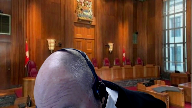
Can I just pile in on that?
Because I was going to intervene earlier and suggest just to add to your exchange with Justices Carrick at Sanis and Roe is that what is fundamentally different it seems to me about an advanced tax ruling is that the tax consequence is thereby imposed in that situation by reason of something CRA did.
Whereas the tax consequence in this situation in any situation absent an advanced tax ruling is imposed because of something the taxpayer did.
In other words it’s a different position in equity it seems to me that CRA stands in if they resile from an advanced ruling than if they just simply administer the statute.
Speaker 1 (00:45:45): Yes, Justice.
I think I would agree with you.
The equitable relationship between, you know, the lower courts here have decided the case as if there’s some sort of equitable relationship between the tax…
Speaker 1 (00:45:58): and CRA, and as I said a few minutes ago, somehow CRA bears responsibility for the taxpayer’s predicament.
That’s simply not accurate.
There’s no equity as between me as a taxpayer and the minister as administrator of the Income Tax Act.
There’s no equity there.
There’s equity when I have a different relationship, like in advanced ruling.
Maybe then I have an equitable claim.
I think what you’ve said is exactly…
I think you put it…
Justice Brown (00:46:25): you found a more elegant way of putting it.
Thank you.
Justice Wagner (00:46:29): Thank you for watching.
Speaker 1 (00:46:33): Now I note the time and so I’d like to move on to the final issue the Crown has raised so that that issue I have the opportunity to answer any of your questions which is the question of adequate remedies.
And so you know the Crown has argued that equity should not assist this taxpayer because it’s not available.
The Crown has argued that even if the court accepts pit and hold is the test then this transaction is aggressive and would fall outside the scope of relief.
And our third argument is even if we fail on those two arguments there are a suite of remedies available to a taxpayer in the position that these taxpayers are in.
And the existence of those remedies is reason for the court not to exercise its equitable jurisdiction to assist the taxpayer.
And you know the court has read our factum and so I’m sure you’ve understand our point that the lower courts fell into a focus on whether or not those other remedies would succeed or were likely to be obtained and that that is not the proper analysis.
The proper analysis is whether an adequate remedy exists in law and it could exist in common law or it could exist under a statute.
And the remedies that are available here are pointed to by the Ontario Court of Appeal in the Canada Life case.
In a nice passage it’s in our condensed book.
A taxpayer always has the right to dispute the assessment if they think that it’s wrong or invalid.
That’s their Income Tax Act remedy.
There are remedies for taxpayers.
The Minister of National Revenue has discretion to grant relief by waiving time limits and waiving interest and penalties where the Minister considers it appropriate.
The Governor and Council, so the Executive, has a delegated ability or power to just flat out cancel tax interest and penalties in cases of hardship or inequity under the Financial Administration Act.
And then there are common law remedies against one’s advisors for you know a breach of contract or for negligence.
And the court, this court, identified those in the Jean Coutu case.
So there’s a suite of remedies available, some created by Parliament.
Justice Kasirer (00:48:50): Mr. Taylor, I understand your point and I read the suite of remedies as you described them and they are there.
Overlapping speakers (00:49:00): The
Justice Kasirer (00:49:01): the adequate character of those alternative remedies.
So the chamber’s judge.
Overlapping speakers (00:49:09): Ehh…
Justice Kasirer (00:49:09): felt that they were not realistic.

There’s comments on this case in the literature that suggests that where an alternative remedy theoretically exists but its likelihood of success is zero or close to zero, it’s as much, at least sitting in equity, it’s as much as to say the remedy doesn’t exist at all.
But what are your thoughts on that point?
Speaker 1 (00:49:36): Well, Justice, I’d submit it’s important to distinguish between the adequacy of a remedy and the availability of a remedy.
And at law, a remedy is adequate where, if obtained, the remedy would make the person whole for the mistake or loss.
And here, those remedies, I don’t mean in this case, I mean the remedies that we’ve identified and that the Ontario Court of Appeal identified in Canada Life.
Those remedies are capable of making a taxpayer whole.
If remission were granted under the Financial Administration Act, the entirety of the tax debt could be relieved.
I don’t want to speculate too much about what would happen in an action against advisors, but I would submit it’s not out of the question that a taxpayer who’s given negligent advice could recover the entirety of their loss or damage.
That may be limited, contractually may be limited in the retainer, but I’m talking about negligence here.
So in terms of adequacy, those remedies exist, and they are capable of making a person whole.
And so that would satisfy the requirement that there be an adequate remedy.
Now with respect to whether they are realistic, that is always, A, that is always going to turn on the specific facts of each case.
But B, the court should be very cautious about supplementing or effectively amending the regime that Parliament has created by exercising its inherent jurisdiction.
Parliament has said where there is hardship or inequity, the governor and council has the authority to relieve from tax.
So Parliament has decided to delegate that power to the executive.
Overlapping speakers (00:51:43): Thank you.
Speaker 1 (00:51:43): Parliament hasn’t said that there’s always an opportunity to remedy every mistake or every unexpected or unwanted tax, but Parliament has given that power.

And this is very similar to the Bramco Holdings case from 1995, which was also the Ontario Court of Appeal, where there was a statutory power for the minister, and that was a provincial tax, there was a statutory power for the minister to relieve from unfairness.
And the taxpayer applied for it, and the minister in Ontario said no.
And then the taxpayer went to court and said, well, give me, you know, help me with equity.
And one of the points the Ontario Court of Appeal made was, it’s not for us to effectively change the legislative framework by providing equitable relief where the statutory avenue exists.
And so even though the principal of that company, Bramco, had been denied the statutory discretionary relief for unfairness, the court was unwilling to exercise its equitable power because of concern about the proper relationship between the judicial branch and the legislation and the executive.
And I would submit that the same would apply here.
Parliament has created a number of different remedies for taxpayers in different ways.
Parliament has not seen fit to provide relief from everything.
And the implication of that is, in a self-assessing system, there may be the rare case where no one is at fault for an error, but tax is payable.
And it’s not necessarily unfair or unjust for that tax to be payable.
And so I would submit then, as I said, the court should be very cautious about exercising a powerful remedy like rescission.
You know, rescission retroactively eliminates a completed and documented transaction.
So that’s a very powerful remedy.
The court should be cautious about doing so where Parliament has provided avenues for relief.
And I would submit that whether or not those are likely to be obtained should not be the governing factor.
The governing factor should be respect for the statutory framework Parliament has enacted.
Justice Rowe (00:54:12): Now you’ve referred us to the Canada Life decision by the Ontario Court of Appeal with respect to this second alternative argument, but I would think that Canada Life is also supportive of your principal argument, notably just quoting very briefly from I think it’s paragraph 63 of Canada Life.
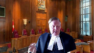
In other words, the Ontario Court of Appeal is referring to Fairmont and Jean Cotu.
In other words, the Supreme Court has signaled that retroactive tax planning by order of the Superior Court exercising its equitable jurisdiction is impermissible.
So it seems to me you can rely upon Canada Life beyond these alternative submissions and also rely upon it in terms of your principal submission.
Speaker 1 (00:55:11): Yes, Justice Roe, we do.
We do rely on it.
And we would say, right now, the situation is such that this court decided Fairmont on Jean Coutu in a rectification context and articulated fundamental principles.
And in Ontario and in Alberta, the appellate courts have said those principles apply also to rescission.
They apply to all of the court’s inherent jurisdiction to relieve from mistake.
And so they’ve said, no, you can’t have this relief in those provinces.
And the Alberta Court of Appeal in the Harvest Operations case even said, well, look, if we give you this, we’re basically giving you an end run around the Fairmont decision because you don’t need to come to court with the prior agreement that you’re rectifying now.
You simply need to come and undo your transaction, and then you can go off and plan another transaction another day.
And in British Columbia, you have the exact opposite.
So the provincial courts have diverged on this.
And we would say Alberta and Ontario have got it right.
They’ve recognized that the principles that were at play in Fairmont are common baseline principles of how does equity interact with the statutory tax regime.
And they need to be applied to rescission as well.
And the law across the country, at least in the common law provinces, needs to be reconciled.
And the answer is Ontario and Alberta got it right.
That more or less concludes my submission on the remedy point.
I just wanted to make one final concluding point about the primary argument.
And I’ve just touched on it a moment ago, which is if this court rejects the Crown’s argument and agrees with the BC Court of Appeal and adopts a broader test for equitable rescission for tax purposes, such as in Pitt and Holt, I just want to remind the court that
Speaker 1 (00:57:19): Such a decision would likely open the door for taxpayers to achieve that end run around what this court said in Fairmont for rectification.
Because now taxpayers can get out of their transaction, you know, under Fairmont, they can’t get out of their transaction unless they actually had an agreement or intention to do something else that had crystallized and then was transcribed incorrectly or implemented incorrectly.
Well, the decision to allow rescission for tax mistakes would remove that that obstacle to taxpayers and would allow them to sidestep Fairmont.
It would allow them to get out of the mess they’ve created for themselves today and then plan something new in the future.
And my friends are likely to argue that these are totally different remedies that do totally different things.
And that is that’s just the natural outcome.
And all I would say is I is I would urge this court not to accept that proposition because that would directly undercut Fairmont and Jean Coutu.
And Fairmont and Jean Coutu finally put an end to an almost 20 year saga in the provincial courts across this country of great confusion about the proper application of equity and Juilliard.
And this court provided an answer.
And I would suspect, expected to have provided some certainty to taxpayers and tax authorities.
And yet five years later, here we are back again.
And so I would urge this court not to open that door, but to keep it closed and to extend the umbrella of Fairmont and Jean Coutu to rescission as well.
Thank you very much.
Justice Wagner (00:59:04): Thank you very much, Mr. Taylor.
The court will take its morning break, 15 minutes.
Justice Rowe (00:59:13): The Court.
Justice Wagner (00:59:22): Mr. Nittekimun?
Speaker 2 (00:59:24): Yes, thank you, Chief Justice.
So, if it please the Court, we have at tab one of our of our condensed book, we have a passage from the Chamber’s Judge’s Decision in Pallant Trust, but before I get there and before I show you the sentence that I want to refer you to, I’d like to give the Court some background and some context to understand why we’re referring to this.
So, to do that I need to go back about 170 years to a case that’s cited in our factum called Stone and Godfrey.
Stone and Godfrey was a decision of the Court of Appeal and Chancery and in that case, Lord Justice Turner said that he had no doubt, he had no doubt that a Court of Equity had the power to relieve people from the consequences of their legal mistakes.
Those are his words.
I have no doubt that this Court has the power to relieve people from the consequences of their mistakes of fact or their mistakes of law and that’s been the rule for 170 years since that case.
Now, if you jump forward about a hundred and something years, 140 years, in 1990 and my learned friend referred to this, there was a case in the UK in the UK Court of Chancery called Gibbon and Mitchell which was a decision of a single judge and that was a rescission case and in that case, the Justice referred to Stone and Godfrey.
In fact, he quotes from Stone and Godfrey but then he goes on to say, oh
but that doesn’t apply to the tax consequences of a mistake and he doesn’t say why.
He doesn’t say how he gets from looking at Stone and Godfrey to saying it doesn’t apply to the tax consequences of a mistake.
He just makes that statement without citing any real authority for it and after that, we had some cases go one way and some cases go another.
So, we had two lines of authority.
There was a case in 2005 that cited in our factum called Siefen Fox where the Court said, no, no, that’s wrong.
Rescission applies to tax consequences just as much as to anything else.
So then finally, we get to 2013 and of course, the Supreme Court’s decision, the UK Supreme Court’s decision, pit and hold and Lord Walker just says Gibbon is wrong.
Gibbon and Mitchell was just decided incorrectly and that tax consequences can be a factor in a court’s consideration of whether to grant rescission.
It’s not the only factor
but it’s not an irrelevant factor either.
The Court goes to a lot of trouble to say you have to look at all of the circumstances in, to use an English expression, in the round, which means looking all of the facts, look at all of the circumstances, give them all the appropriate weight that they deserve on the facts of that particular case and then decide which is more fair.
The Court said you have to make a decision on the justice of the case.
Is it more fair to leave the taxpayer to pay the tax or is it more fair in the circumstances to relieve the taxpayer from the tax consequences of the mistake?
And of course, in any particular case, that might be a difficult decision to weigh but as a, what I would say is a jurisprudential test, it’s a fairly simple test.
You look at the facts and you decide what’s fair in the circumstances and the Court made it clear that that’s an objective test.
It’s not a subjective test.
You’re not supposed to have sympathy for the taxpayer because they have to pay too much tax and you’re not supposed to have sympathy for the Treasury because they’re going to lose some tax.
You try and look at the facts and what the Court called an objective sense and make a decision on the justices, on the justice of the case.
On the fairness of the case.
What the Court called unconscionable or unjust or unfair.
The Court seemed to use those as synonyms.
Now, what happened in the Pallant Trust case was we brought that case to court and in fact, my learned friend and I were the counsel in that case.
So we brought Pittenholt to the Court and the Court accepted that that was the proper test.
And the Court looked at all of the facts.
It looked at the CRA’s longstanding interpretation of 75-2 and the fact that that had been favorably accepted by the tax community as a whole.
It looked at the actual written opinion that was given by MNP.
It looked at the amount of tax that was in play in the case.
And based on all of the facts, the Chamber’s judge said, I find that it’s more fair to relieve Mr. Pallant or his trust from the tax consequences than it would be to leave things as they are.
And the key point in paragraph what I’ve got at tab one in paragraph 57 of his decision, the key point is, he says, what brings this case into the quote, zone of unfairness is the fact that the CRA was never going to audit these taxpayers until somer was decided.
And he makes that as a finding of fact.
That’s not, you know, a guess on his part.
He looked at the evidence that had been presented, the affidavit evidence both by the taxpayer and the CRA.
And he says, I find as a fact that the CRA was never going to assess these taxpayers until somer was decided in the Tax Court of Canada.
And he says, that’s what brings this case into the zone of unfairness, because now you’ve got the CRA and instead of being, how can one put it, somewhat bashful and saying, oh gosh, we got it wrong.
Yeah, we’ll apply somer on a go forward basis, but we’re not going to turn around and do it retroactively.
The CRA, and not to pun a phrase, in a very aggressive sense, turned around and reassessed all of these taxpayers who had done transactions three or four years before somer and said, we’re going to assess you retroactively based on somer.
And he said, that’s what brought this case into the zone of unfairness.
And if we move ahead to our case, to the Collins case, the chambers judge in our case, Justice Yashie, said he was going to make the same finding of fact based on the evidence before him.
He was prepared to make exactly the same finding of fact that CRA was never going to assess the Collins Trust or the Cochran Trust before somer.
Now, my learned friend says, well, that’s an error of, I think he says it’s an error of law.
I’m not sure how it could be an error of law, but anyway, he says it’s an error.
Well, there’s no palpable and overriding error there.
Those are decisions made by the chambers justices who reviewed the affidavit evidence and made a finding of fact on those affidavit, on those affidavit.
And in light of those findings, the justices said in both cases, that’s what brings this case into the zone of unfairness.
Justice Martin (01:07:32): May I ask a question though?
In that case in Palin, Mr. Taylor says that CRA had sent notices of reassessment before the decision had come out in Somers.
So how does that operate?
Was that before the court in Palin?
Speaker 2 (01:07:55): Yes, Justice, with all due respect to my learned friend, that’s not quite correct.
It’s correct and not correct.
The first notice of audit was sent in May of 2012.
That was in between, that was after the tax court decision in Somero, but before the Federal Court of Appeal decision in Somero.
Federal Court of Appeal was in July of 2012, July 19th of 2012, tax court was in 2011.
First audit letter was May of 2012.
So right in the middle, but based on the fact that it was after the tax court decision in Somero, that was one of the pieces of evidence that the judges relied on, the justices relied on in both cases, Palin and Collins to say the inference they drew was that there was no intention to ever audit these trusts but for the tax court’s decision in Somero.
Justice Côté (01:08:50): Mr. Nick Hickman, your colleague, Mr. Taylor, in his outline of arguments, says that the inference, the finding of fact by the chamber judge that CRA would not have reassessed the trust without some error, is not supported by the record, and he refers to a letter, the affidavit of Mr. Eugenio, saying that CRA began attacking the plans using GAR as early as 2009.
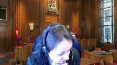
What do you answer to that?
Speaker 2 (01:09:25): Well, Justice Cote, that is that is true.
They were attacking some of these plans, but they weren’t attacking, they weren’t auditing these particular taxpayers.
If you look at the if you look at the letter that was sent or if you look at the affidavit evidence, those were attacking plans where there was a gift to the trust.
There’s no evidence at all of any audit of any plan where there was a sale to the trust.
So with all due respect to my learned friend, I would say the affidavit evidence that was filed in both cases very clearly supports the inferences and the findings made by the justices.
Justice Côté (01:10:05): Okay, thank you.
Justice Jamal (01:10:07): one can accept that finding a fact that it wouldn’t have been reassessed but for SOMERA, but the question is really whether that’s a legally relevant fact.
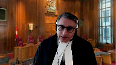
I guess my question is, can you tell me how it is that the circumstances at BAH don’t run afoul of the two principles of tax policy enunciated in FEM on Donjon Coutu, which I take it as being limitations of the reach of equity, the principle that you taxed on what you did, and the principle against retroactive planning.
How are those, even accepting the notional unfairness that you refer to in the finding of fact, how does that unfairness square with the principles in those cases?
Speaker 2 (01:10:58): Thank you Justice Jamal.
I was just about to turn to Fairmont because of course that’s the key case in this in this appeal or one of the key cases anyway.
So let me let me say this
and I’ll say it as plainly and as bluntly as I can.
We fundamentally disagree with my learned friend’s interpretation of what this court said in Fairmont.
We think it says exactly the opposite of what my learned friend says it says.
We think it supports the decision in Pallant Trust and in Collins and the reason we say that is because of two key passages and the two key passages are at paragraphs 21 and 22 of Fairmont and paragraph 25 and let me just remind you what what those passages say.
In paragraphs 21 and 22 this court in Fairmont approved of a case in England called Slowcock’s Will Trusts.
Slowcock’s Will Trusts was a rectification case and the key point about that case is that it was a tax case.
The Justice in that case says in his judgment the only reason I think he uses the word sole the sole reason this case is before the court is to relieve the taxpayer of a tax and he says I am prepared to grant rectification even though the sole purpose of this case being here is to relieve the taxpayer from the tax they would otherwise pay and this court in paragraphs 21 and 22 of Fairmont says yes that is a correct application of the test for rectification because tax is a neutral factor.
If you meet the test for rectification then you get rectification and the fact that that’s going to relieve you from tax doesn’t stop you from getting rectification.
If you don’t meet the test for rectification then of course you don’t get it and the fact that you have to pay some unexpected amount of tax well too bad so sad that’s not our problem.
So the fact that this court specifically and very clearly approved of the court of the case in Slowcock’s Will Trusts proves to us at least on our reading of Fairmont that this court said that if you meet the test for an equitable remedy the fact that you’re going to be relieved of tax is okay that doesn’t stop you from getting the the equitable remedy that you’re otherwise entitled to.
The other key passage is paragraph 25 and paragraph 25 says that the test for rectification is applied in a tax context just as much as it is applied in the non-tax context and what you’ll notice is that nowhere in my learned friends materials not in the factum not in the condensed book not in his oral argument did he refer you to paragraph 25 and try and explain what that what the court meant by that paragraph.
Nowhere does he deal with that this court says the test for rectification is applied in a tax context just as much as in a non-tax context and that’s the passage that the BC courts of appeal the BC court of appeal has relied on both in the 555 Manitoba case which was a rectification case and in the Collins case which was a rescission case to understand what Fairmont was really trying to say which is simply this that if you meet the test for equitable remedy you get the equitable remedy and the fact that it’s going to help you out of a tax jam doesn’t doesn’t affect that you don’t meet the test for an equitable remedy then go away the fact that you’re going to have to pay taxes too bad
yes there are some broad comments in Fairmont Justice Brown
I think said you know rectification is not a mulligan which if you’re a golfer which I’m not means you get to do a do-over yes there are some broad statements in in Fairmont but the reason for those statements are there in our submission is because the Ontario court of appeal in Juilliard had gotten it wrong
and so this court was at great pains to point out what rectification is really about it’s not about changing the underlying agreement it’s only about changing the document that records that agreement so this court went to great pains and made some broad statements to make it really clear what rectification is all about but the fundamental principle that that arises from that case that’s applicable to this case is if you meet the test for an equitable remedy then the fact that that helps you out of a tax problem is neither here nor there that’s our fundamental reading of Fairmont and that’s where we fundamentally disagree with my learned friend with the appellant
Justice Rowe (01:16:06): And if we read Fairmont and Jean Coeture in a different way, then I take it you lose.
Speaker 2 (01:16:16): Well, I suppose that’s correct, Justice Rao.
But let me say this.
If that were the fundamental principle of Fairmont, it would have been a one-paragraph decision.
It wouldn’t have been a 30-page decision.
All this court needed to say is, this is a tax case.
We don’t give equitable remedies to relieve tax.
Too bad, go away, or appeal allowed.
The fact that this court went to such trouble to enunciate what rectification is really all about and to approve the decision in Slowcock’s will trusts and to state that the test for rectification is the same in a tax context as it is in a non-tax context, those are the clues that allowed the BC Court of Appeal in 555 Manitoba and in Collins to interpret Fairmont the way I’m trying to articulate it now.
Justice Wagner (01:17:13): So, Mr. Neddickman, would you say that what we wrote in Jean Coutu has no bearing on this case?
Speaker 2 (01:17:25): Well, that was based on the Quebec Civil Code, of course, Chief Justice. So…
Yeah, but it dealt with the same principle.
Justice Wagner (01:17:34): You
Overlapping speakers (01:17:34): It, it, it, it, it, it, it, it, it, it, it, it, it, it, it, it, it.
Justice Wagner (01:17:36): matters and we refer to both Fairmount, Fairmount referred to Jacques Coutu and we’re dealing in a tax situation.
Speaker 2 (01:17:44): Yes, and my submission there is that, as you just said, because the two cases relied on each other, if there were something in Jean Coutu which, how can I say it, affected the reasoning in Fairmont, the court in Fairmont would have said that.
But the statements in Fairmont are made taking Jean Coutu into account.
So our submission is that there can’t be anything in Jean Coutu which is contrary to what we’re saying or the court wouldn’t have made the statements that it made in Fairmont.
I don’t know if that answers your question.
Justice Kasirer (01:18:21): May I follow up on that just by asking you what do you make of the Shell Canada case, the 1999 case relied on by our court in those judgments where it was said that a taxpayer should expect to be taxed based on what it actually did and not based on what it could have could have done.
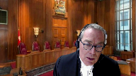
Overlapping speakers (01:18:44): It’s not as if.
Justice Kasirer (01:18:47): Fairmount came out of the clear blue sky, nor did Jean Coutu.
Where does that line up in your view?
Speaker 2 (01:18:56): Yes, thank you, Justice Kassir.
Our view of Shell Canada is a simple proposition, and it’s mainly this, that tax is an accessory system.
In fact, this court has said that in a number of tax decisions.
The Income Tax Act is an accessory system, except in very, very rare cases.
The Income Tax Act says you tell us what the provincial law decides about the legal effect of this transaction, and we’ll tell you what the tax consequences are.
But rescission is just as much part of provincial law as contract law or trust law or any other kind of law is.
It’s not like you hive off rescission and doctrine of equity from Shell Canada.
Shell Canada, as we read it, incorporates all of provincial law, and that includes rescission.
And in fact, one of the statements that we’ve made in our factum, we note that the principle of Shell Canada is now embodied in Section 8.1 of the Federal Interpretation Act.
It essentially reflects Shell Canada by saying, when you’re dealing with a legal concept in a federal statute, you have to turn to provincial law.
Well, there’s no exception written in Section 8.1 for rescission.
It doesn’t say, oh, by the way, provincial law for this purpose doesn’t include rescission.
Justice Karakatsanis (01:20:24): Can I ask this?
I mean, how far does your point actually take you?
Let’s assume for a moment that equity and rescission applies.
It applies notwithstanding what the context is.
To determine unfairness, you still have to look at the context and the nature of the tax context in a general self-assessing system.
Wouldn’t that be a relevant consideration when looking to unfairness?
And in fact, might be such, as is pointed out in those general principles articulated in Fairmont and Coutu, that it would be such that, generally speaking, if it’s just about tax consequences, then what’s unfair about that?
I mean, subject to maybe specific situations where the facts are different.
But I don’t understand how far your point actually takes you because the key issue is about unfairness.
And even if it might possibly be available in a tax situation, is it available?
Is it unfair in the usual kind of tax situation where you may have interpretation bulletins, which in themselves make clear that they’re not binding and subject to cases, the court’s interpretation?
Speaker 2 (01:21:57): Thank you, Justice.
So my answer to that is one of the points we’ve made in our factum and one of the points we’ve made in our condensed book.
So let me address that very clearly.
Our position is that one of the key elements of the test in Pitt and Holt, I kind of think of it as the fourth element.
Pitt and Holt says there’s three elements to the test.
There has to be a mistake.
It has to be a serious mistake and it has to be unconscionable to leave things as they are.
But there’s a fourth element to the test.
And we think this is really the key to this case in a tax context.
And it’s the element of risk.
What risk did the taxpayer accept in doing the transaction?
Or what kind of, what element of risk should the taxpayer be taken to have assumed in doing the transaction?
In the vast, vast majority of cases, and I say that, you know, 99.9% of cases that come to a tax professional such as myself, the taxpayer is going to be told what the risks of the transaction are.
And if those risks come to pass, well, there’s no mistake.
You don’t get to say, oh, well, I knew this was a risk and I did it anyway.
And now it turns out I got to pay tax.
So now I want rescission.
You don’t get to do that.
This is one of these rare cases and Pitt and Holt uses the word rare.
Lord Walker and Pitt and Holt uses the word rare and Justice Newbury in the Palin Trust Court case in the BC Court of Appeal uses the word rare, saying it will be a rare case where the taxpayer can honestly and truly say, I did not accept this risk.
This was not a risk I was aware of.
It was not a risk that was told to me.
I was not accepting this risk and it’s come to pass. That is-
But how can you-
Justice Martin (01:24:09): say that the
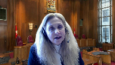
but but you must then also be asserting that these trusts did not understand the risks and we have documents that MNP explained to them what the risks of the transactions were and gave them the opportunity an option of having an advanced tax ruling
and they chose not to do so.
So on the facts of this case when we’re assessing risk how do you say that it’s something that points to rescission?
Speaker 2 (01:24:45): Thank you Justice Martin.
So the answer to that is this, if you look at the MNP opinion and part of it is in my learned friend’s condensed book, one of the tabs, if you read it carefully, it says there’s a GAR risk but that risk hasn’t come to pass.
It says there’s a risk of future legislative change but that risk hasn’t come to pass.
It says there’s a risk that the CRA will not agree with our intervention.
Justice Brown (01:25:14): Well, then it wouldn’t be a risk.
I mean, the very nature of risks is that they haven’t come to pass.
Well, no, but some risks do come to pass.
I’m sorry.
Well, but at the time you’re advising of a risk, it hasn’t come to pass.
That’s what makes it a risk.
Speaker 2 (01:25:29): No, but what I’m saying is, what I’m saying is the risks, the risk that the taxpayers were aware of aren’t the risks that have come to pass in this case.
The risks that the taxpayers were aware of aren’t the risks that the taxpayers were aware of aren’t the risks that the taxpayers were aware of aren’t the risks that the taxpayers were aware of aren’t the risks that the taxpayers were aware of aren’t the risks that the taxpayers were aware of aren’t the risks that the taxpayers were aware of aren’t the risks that the taxpayers were aware of aren’t the risks that the taxpayers were aware of aren’t the risks that the taxpayers were aware of aren’t the risks that the taxpayers were aware of aren’t the risks that the taxpayers were aware of aren’t the risks that the taxpayers were aware of aren’t the risks that the taxpayers were aware of aren’t the risks that the taxpayers were aware of aren’t the risks that the taxpayers were aware of aren’t the risks that the taxpayers were aware of aren’t the risks that the taxpayers were aware of aren’t the risks that the taxpayers were aware of aren’t the risks that the taxpayers were aware of aren’t the risks that the taxpayers were aware of aren’t the risks that the taxpayers were aware of aren’t the risks that
Overlapping speakers (01:25:40): Oh, I see.
Okay, sorry.
I’m sorry.
I thought you were quoting the advisors. Okay.
Speaker 2 (01:25:46): The matter that has come to pass in this case is that the interpretation, not the application, the interpretation of 75-2 has changed.

And I almost hate to say this word retroactively.
Now we all know there’s all this jurisprudence and philosophy about, does a case decide cases as they always were, does it change the law?
I don’t wanna get drawn into that.
What I can say is,
Justice Kasirer (01:26:13): that is sorry that’s not that’s not a tall fair that you don’t want to get drawn into something that runs straight against your
Overlapping speakers (01:26:20): position.
Justice Kasirer (01:26:21): idea that Summoner changed the law is by no means a given.
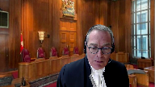
The law was what it was, and it was revealed to be what it was when the tax court and the Federal Court of Appeal intervened.
So your argument is predicated on a risk that took shape based on a change in the law that surprised tax professionals across the community, when the real answer is the law is the law.
It was the law when 75-2 was enacted.
And it was just revealed to be perhaps to the surprise of some, including the Collins Trust.
But there was that risk.
And there was that risk that was not obviated by the fact that the of an advanced ruling.
So that risk was there.
And that undermines them.
I think, frankly, I asked your colleague this, and he was, he was gentle about it.
I think it undermines the very existence of a mistake.
But he didn’t seem to want to go all the way there.
But I don’t think you can ignore the fact that the law was the law when it was enacted by Parliament.
Speaker 2 (01:27:35): well, Justice, I don’t want to run away from a philosophical case.
I don’t have that much or a philosophical argument, but let me say this.
The risk that was not accepted or never explained to the taxpayers and never accepted was that the law would be changed in such a way that the COA would retroactively change their interpretation and their application of 75-2 and come back and audit the taxpayers based on a future decision that changed the law.
Now, you can say the law was always the law and somewhere it just revealed the law.
Fine, I’m prepared to accept that, but the CRA had a choice.
They could have said, we’ll apply that on a go-forward basis or we’ll apply it on a retroactive basis.
That’s not a change in the law.
That’s a change in administrative policy that the CRA made a decision on.
That’s what the courts below said brought this into the zone of unfairness.
What’s the level of risk? Sorry.
Justice Jamal (01:28:37): What’s the level of risk, Mr. Nitigman, and the level of consensus in the legal community that’s required in order for rescission, as you’ve articulated it, to be available?
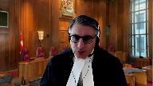
Because there’s always risk.
It may be a small risk, it may be a larger risk, it may be a significant risk, but there’s always risk.
So what’s the threshold you say that’s needed and what consensus in the legal community is required for the equitable remedy to be invoked?
Speaker 2 (01:29:10): Justice Jamal, I wouldn’t phrase it that way, if I might.
I would answer that by saying it’s the risk that the taxpayer is made aware of by his or her tax professionals, or the risk that he or she should be taken to have assumed in the circumstances of the case.
Let me give you an example, so it’s clear what I mean.
Suppose a taxpayer goes off and does some complicated or aggressive tax plan and doesn’t get tax advice, and then comes back later and says, oh gosh, I didn’t know this was a risk.
I didn’t know the act would apply this way.
I want rescission.
Well, there is a situation where somebody might say, you should be taken to have assumed the risk in this situation.
So it’s not the general consensus in the tax community.
It’s the advice given to the taxpayer by his or her tax advisors, what they’re made aware of, and what they should be taken to be aware of in the circumstances of the case.
Justice Rowe (01:30:16): So a taxpayer goes off to capable tax advisors, receives advice for, let’s say, an audacious approach, a spirited approach, if you wish, perhaps as opposed to an aggressive approach.

And it proves when the matter is tested before the court to have been mistaken.
In your view, because the taxpayer wasn’t apprised of this possibility, the taxpayer is held harmless.
The consequence of that is that the government acts as an insurer for the tax advice.
Because if the tax advisor is mistaken, the government just kind of has to step back and say, well, you get to try again, as opposed to saying the law is the law, and if you’ve been given bad advice, then you have other remedies.
Speaker 2 (01:31:27): Yes, Justice Rao.
So the problem with your question, if I may, with all the greatest of respect, is the factual assumption behind it.
I’ve been a tax lawyer for a long time and the chances of somebody, some tax professional giving advice to a taxpayer on a spirited tax plan without telling them the risk that the CRA or the courts are not going to agree to it is very, very small.
It’s vanishingly small.
That’s a hypothetical.
Excuse me, excuse me.
Justice Moldaver (01:32:04): Mr. Nitiquand, it seems to me that we’re into an area here that we don’t see very often, certainly not in the area that I’m more familiar with, where you can’t go to the Minister of Justice and ask for an advance ruling as to whether something you’re planning to do is criminal or not.
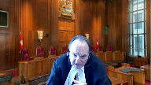
Here, you have a built-in feature of the Tax Act to deal with situations where there is concern.
It’s almost, it seems to me, because there was a discussion earlier about the advanced rulings, and there was a little bit of nitpicking as to how you would sort of define them.
But in my simple terms, if you went for an advance ruling and got it, one could argue officially induced error, which would, with respect, it seems to me, get you out of the concern that Justice Jamal indicated, which is, this is a statute.
We don’t really, equity doesn’t apply, as he points out, to statutes, but it seems to me that in the Tax Act you have a perfect answer to this, or the tax rules and so on.
You go and get a ruling, and if you don’t go and get a ruling, you can say, oh, well, there was bulletins and so on and so forth, but it would not, it seems to me, meet the high test for officially induced error.
I don’t know what you say about that.
Maybe I’m totally off.
Speaker 2 (01:33:37): base?
Well, Justice Muldauer, there’s been a lot of talk about rulings so perhaps I can take a few minutes to talk about rulings.
It is, how can one say this, when you apply for an advance ruling you don’t go there because you’re doing a transaction where everybody already knows the answer.
You don’t go apply for a ruling and saying, hey CRA, you’ve interpreted this section the same way for 20 years, do you still interpret it that way?
That’s not what people go to get rulings on.
So to say to MNP, or Mr. Collins in this case, gee
Justice Moldaver (01:34:23): And I mean, excuse me for a second, I like to be very practical too, but I don’t think you’re answering the question.
Speaker 2 (01:34:30): Well, I’m trying to, my Lord, or Justice, because you’re saying in every, you’re suggesting that in every transaction, in every case, a taxpayer should go get a ruling.
That’s just not the way the system works.
Justice Moldaver (01:34:45): No, I’m not suggesting that at all.
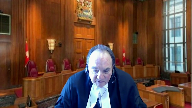
I’m suggesting where there is some risk that it’s referred to in the opinion you get and so on, and that everybody knows that things could change in connection with the statute that has heretofore not been interpreted.
This gives you a leg up on so many other people who can’t go to the Ontario government and say, does this mean this?
If I do this, will I be okay?
Get an advance ruling on whether or not you’re going to breach the Highway Traffic Act or some other statute of Ontario.
We don’t have that.
But you’ve got that.
So I don’t think you can get out of it by saying, well, we don’t do that very often.
Speaker 2 (01:35:31): Well, but Justice Muldauer, if I may, with respect, if we had gone for a ruling and said to the CRA on a ruling basis, do you think 75-2 applies on a sale of property just as much to a gift?
The answer would have been yes.
So what would the ruling have gotten us that we don’t have now?
You have it in.
Justice Moldaver (01:35:53): officially induced error at that point it seems to me.
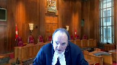
You have a provision that is an official part that says you can go and ask and you went and asked you got a wrong answer and you can say, you know, I was induced by this answer.
And everybody seemed to agree, I think, maybe you don’t, that if you had gone an advanced ruling that says this is okay, we wouldn’t be here.
Speaker 2 (01:36:19): Justice, if I may, there’s actually a case in the Federal Court of Appeal, I’m sorry I wasn’t expecting this line of questioning
so I can’t dredge the name up off the top of my head.
There is a case in the Federal Court of Appeal that says advanced rulings are not binding on the CRA.
The CRA withdrew a ruling and the taxpayer applied for judicial review.
I’m talking about the kind of…
Justice Moldaver (01:36:43): of unfairness that would get you the rescission that you’re looking to.
Speaker 2 (01:36:49): Well, in my respectful submission, Justice, there’s no difference between getting a ruling that says 75-2 applies on a sale and relying on a decade’s worth of CRA interpretation that says 75-2 applies to a sale.
Overlapping speakers (01:37:05): I guess we’ll decide that in this case.
Yes, I guess.
Speaker 2 (01:37:08): I guess you will.
Overlapping speakers (01:37:09): Can I ask you to-
Justice Karakatsanis (01:37:10): Can I just ask you this, because when we’re looking at the issue of unfairness, does it make a difference if the taxpayer is using rules that were designed to prevent tax avoidance in order to avoid tax?
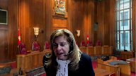
Speaker 2 (01:37:31): So Justice, if I can answer that in two parts, the first part is this, that the aggressiveness of a tax plan can be a factor, we say, that a court can take into account in looking at the overall fairness of whether to grant rescission.
But the reason we say that, and I wanted to make this as clear as I can, the reason we say that is not because aggressiveness or aggressive tax planning is somehow immoral or there’s a bad value judgment about that.
And I would refer to Justice Cote’s decision in the Alta Energy case in November, and I can even quote you the paragraph, paragraph 96, where she says, GAR is not about a value judgment.
GAR is not whether something is good or bad.
We don’t do tax based on morality.
So the aggressiveness of a tax plan is not because it’s moral or immoral.
It’s because it refers, it highlights the risk that a taxpayer might be taken to have taken.
The more aggressive a tax plan is, the more one might say, well, you knew the risk, you took the risk, the risk has come to pass, too bad, so sad.
But it’s, so yes, it can be a factor, we say.
But I would also say this, Justice, we don’t view 75-2 in our submission.
There’s been a lot of talk about 75-2 being an anti-avoidance provision.
Our submission is it’s not.
That’s not a correct understanding of 75-2 in our submission.
Justice Côté (01:39:12): I just want to ask you a question because Justice Moldavar asked you about questions about the absence of a tax ruling here asked from CRA.
Is there any weight that we should give to the position taken by CRA regarding the interpretation of Section 75-2 before the Federal Court and the Federal Court of Appeal in the Somer Hur case?
Because I understand that in the Somer Hur case they maintain the same interpretation they always add of 75-2.
Speaker 2 (01:39:48): Yes, of course, when they were appealing Somerer, they went to the Federal Court of Appeal and said, look, 75-2 applies on it.
It uses the word receipt.
When a trust has received property and the word received is not, it’s just a blanket word, it’s a general word.
So received means received in any fashion, whether it’s a sale or a gift, doesn’t matter.
That was their argument.
And they maintained that argument until they lost in the Federal Court of Appeal in July of 2012, I think it was.
Justice Moldaver (01:40:18): But officially induced error occurs before you do something, not after.
The fact that you guys went, or that the other side went, and tried to uphold their position, is after the event.
Overlapping speakers (01:40:29): Is ma-
Justice Moldaver (01:40:29): it?
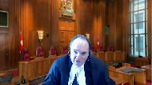
It wasn’t it after these plans had already gone into effect, the trusts and so on?
So I guess my point is I don’t know how you can rely on something that the tax department does later after you have already made a decision and part of that decision is not to go and get an advance ruling.
Speaker 2 (01:40:53): Well, Justice, if I may, you’ve used the phrase officially induced error.
That’s a completely separate doctrine that we’re not relying on in our position.
That’s not in our factum.
We’ve relied on rescission as set out in pit and hold.
We think officially induced error is a completely separate doctrine.
And I, of course, the court will write what it wants to write, but we’re not relying on that.
That’s not a position that we’re trying to get within or trying to bring ourselves within.
Justice Moldaver (01:41:22): I understand that.
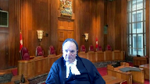
All I’m saying to you is you have, everybody agreed, Justice Kara Kosanis said to you, when we’re looking at precision and unfairness and so on, don’t we look to context.
So here we’re looking to context and you say it should apply to tax consequences.
I don’t, I don’t disagree, but context includes an opportunity to get a ruling that hardly exists anywhere else, it seems to me.
So that’s part of the context.
I guess that’s all I’m really getting at.
Speaker 2 (01:41:54): And I can agree with you, Justice, but I would also say that another part of the context is that you don’t normally get a ruling when everybody understands that it’s a bread and butter, you know, a bread and butter interpretation.
So that also has to be part of the context in my submission.
I’m sorry, I don’t know.
I left off answering, I’m not sure which Justice’s question.
Oh, I was answering Justice Kerikatanis’ question about 75-2.
So our position is simply this, 75-2 gives taxpayers a choice.
It gives you an election.
It says, if you want to transfer property to a trust and give up complete control of the property with no strings attached, then the trust is taxed on the income and you’re not.
If you want to transfer property to a trust and keep some control over the property, then you’re taxed on the property and the trust is not.
That’s a choice that you have and you can avail yourself of that choice one way or the other, depending on your circumstances.
That’s not an anti-avoidance rule.
That’s just a choice that’s given to the taxpayers depending on how they want to set up their transaction.
So this idea that somehow there’s been an evil trust, my learned friend in this factum has used that phrase many times or that this was an anti-avoidance rule, we don’t agree with that understanding of 75-2.
It’s just a choice that the act gives taxpayers.
How do you want to design your transaction?
Here we thought we had designed it one way and 75-2 would apply.
And it turns out based on somewhere that that wasn’t correct.
Justice Côté (01:43:35): Yeah but it is called an evil trust I think because of the combination of 75-2 and section 112 of the the income tax act because the holding company can deduct from its income the dividends declared to the trust so I think this is yeah. Yeah
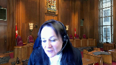
so of course that’s why the CRA likes to call it an evil trust. Yeah.
Speaker 2 (01:43:58): that’s not necessarily taxpayers’ view of the situation.
So, you know, I understand it from the CRA’s point of view.
I’m just saying not everybody agrees with that understanding of 75-2 in the tax community.
So let me move ahead, if I may.
So I think I’ve covered most of the points.
Perhaps I can talk about alternative remedies if that’s okay with the court, unless the court has another question for me on this part.
Thank you for your time, and I look forward to seeing you again next time.
Justice Côté (01:44:36): Before going to Alternative Remedies, Mr. Nitikman, I just want to know, you say that you asked us to dismiss the appeal and to return to the order of the BC Supreme Court.
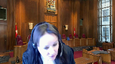
And when I look at the order made, so you asked for decision of all the transactions, except for the creation of the trust and the creation of the holding company, is it that?
Yes, that’s correct.
So you want to keep in place the trust and the holding company.
Speaker 2 (01:45:10): Well, yes, the trust by itself, there’s nothing wrong with the trust and the holding company, it’s the fact that they received the dividends that we’re rescinding, but there’s nothing wrong with the trust itself.
Justice Côté (01:45:23): No, I’m not saying there is something wrong, but I was asking myself a decision.
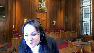
It’s an all or nothing thing.
So you cannot resign just in part, but you are asking to re-send the dividends and the loans, but you say that you don’t ask for the holding company to disappear nor the trust.
Speaker 2 (01:45:43): Yes Justice and I don’t want to go off on a scramble here but the idea that you can only that you can’t have partial rescission that only applies to within a particular document that doesn’t apply to others.
Overlapping speakers (01:45:53): structures.
Speaker 2 (01:45:54): So perhaps I’ll turn to alternative remedies.
And the point I would like to make, and this is an important point, so let me start with this.
In the Chamber’s decision in this case, in Collins, Justice Kiyoshi, he didn’t say that alternative remedies were completely irrelevant.
He didn’t say, oh, if you meet the test for rescission, you always get rescission.
And the fact that these alternative remedies are completely irrelevant.
He didn’t say that.
What he said was, on the facts of this particular case, based on the evidence, and more particularly, based on the lack of evidence that was put in by the CRA, he did not find that it was proper to give any credence to the alternative remedies suggested by the Crown in this case.
So I wanna be very clear that in our view, Justice Kiyoshi didn’t enunciate some rule of law where he said, oh, you know, alternative remedies are irrelevant.
Remission under the Financial Administration Act, that’s irrelevant.
Suing your lawyers is irrelevant.
He didn’t enunciate some rule of law.
What he said was, on the facts of this particular case, he didn’t find that the alternative remedies were adequate.
The Crown, that was the Crown’s onus to prove.
They didn’t meet that onus.
And therefore, he found that he couldn’t give any credence to the alternative remedies suggested by the Crown.
Now, my learned friend has essentially said, and I’m putting words in his mouth, but that’s okay.
He’s essentially said, the mere fact that these alternative remedies are theoretically available is enough.
That’s enough to kick this case out of court.
No matter what else you decide, the mere fact that section 23 sub two of the Financial Administration Act exists and gives you remission, or that you could sue MNP, that’s enough to kick this case out of, or to allow the appeal and kick the taxpayer out of court.
Our submission is, that’s not what the jurisprudence says.
This court’s jurisprudence, and we’ve stated it as clearly as we can in our factum in the Strickland case, says there has to be an adequate alternative remedy.
And adequate means exactly that.
You have to look at all of the factors that come into play.
Is it available?
How much does it cost?
Is it something that is potentially available to the claimant in the case?
You have to look at all of the factors and ask yourself, is it adequate?
The mere fact that it’s theoretically available, this court says, that’s not enough.
And in fact, there’s a decision in the BC Supreme Court called 074, which was a rescission of a GST case.
And in that case, the CRA argued that there was a theoretical alternative remedy, and the court said, well, I’m sorry, that’s not good enough.
It can’t be just theoretically all available.
It’s gotta be available in fact, not just in theory.
So if you look at the alternative remedies available in this case, what do you have?
Well, number one, you have the potential to appeal to the tax court of Canada, but that’s impossible because we’ve got the Somerer decision.
There’s, we wouldn’t even get, I wouldn’t even take the case, and I’ll take any case, but I wouldn’t take that case because what are you gonna argue?
I mean, you’ve got the Somerer case.
What are you gonna say?
So you’re gonna lose before you even walk in the door.
So that’s not an alternative remedy.
You’ve got suing MNP.
The problem with suing MNP is they weren’t negligent as far as anybody can tell.
They adopted the interpretation that the CRA had given and that all of the commentators had given on 75-2.
So to go say, well, we’re gonna sue MNP, well, you’re probably not gonna get very far.
And in fact, their first line of defenses, you should have gotten to apply for remission, for rescission because you’ve got a duty to mitigate.
So you’re not gonna get very far suing MNP.
And the third alternative is to apply for remission under the Financial Administration Act.
But the CRA’s own documents say, look, we’re not giving you remission when it’s your professional’s error.
That’s not a situation we give you remission for.
They state that in the documents that we filed with our authorities.
And in Pallant Trust, Madam Justice Newbery said, the chances of getting remission in this case are pretty much zero.
I think she said slim to none, but anyway, pretty much zero.
So our submission is that on the facts of this particular case, Justice Kiyoshi got it exactly right.
There’s no error of fact there.
There’s no error of law there.
The mere fact that you’ve got some theoretical alternative remedy in our submission isn’t enough to kick you out of court.
And let me say this, if that were the case, why do we have the decisions in Fairmont and Jean Couteau?
Why aren’t they one line decisions that say, hey, you could have applied for remission under the Financial Administration Act, appeals are allowed, go away.
It would have been a one line decision.
The very fact that we have those long detailed decisions means that the stance that my learned friend has taken on alternative remedies really isn’t the law.
Those arguments were raised in the fact in Jean Couteau and in Fairmont, but the court didn’t give any credence to them.
Didn’t even mention them in Fairmont.
So our submission is-
Thank you for your time, Farron, and thank you for your time.
Justice Kasirer (01:51:54): fairness did mention them in Jean Coutu where the court emphasized that where a taxpayer undertook a transaction relying on deficient advice that they should sue their tax advisors.
I’m wondering if you, in making your point, which I understand, the idea that it’s got to be a realistic avenue of recourse in order to fit.
You’ve maybe overstated the position of your friend.
I don’t think he’s saying that it just must theoretically exist because that would pretty much block equity in all circumstances.
I see his position, and now I’m putting words into his mouth, but I see his position.
He cited Canada Life here, and in Canada Life, the Ontario Court of Appeal said the question is not necessarily whether the taxpayer would have been successful in pursuing the alternative relief, but whether there is a remedy at law, and then cited Bramco leading works on modern equity law, Hanbury and Martin, Jeffrey Behrman on remedies.
I think you’ve made your case, but I think you’ve overstated the defects of the other side.
Speaker 2 (01:53:15): Well, Justice, if I may, if I may point out that in Canada life, unlike this case in Justice Joshi’s chambers, in Canada life, there was no evidence led at all about what the likelihood or how a remission application might be received by the CRA.
And yet the court said the fact that there’s remission means that there’s an alternative remedy.
If you put those two things together in our submission, what the court in Canada life really did was say the mere fact that there’s a remission order potentially available is enough.
Because there was no evidence on the point.
They didn’t look at the CRA guidelines the way we’ve put it before you.
The most recent statement that just came out, I think in July of last year, where the CRA says you must exhaust all of your other remedies before we’ll look at giving you remission.
That wasn’t before the court in Canada life.
The court took a very different approach than the Justice Joshi did.
It said we don’t need any evidence.
We’re just going to say the mere fact that there’s remission out there is enough.
Justice Joshi took a different approach and he said, no, I need to know how these alternative remedies might apply on the facts of this case.
Without any evidence on that, I can’t make a decision.
So I’m not going to give any credence to that.
Our submission is that that’s the proper approach for any court to take.
Thank you.
Could I ask one more question?
I’m sorry about this.
It goes to
Justice Moldaver (01:54:55): what Justice Cote was asking.
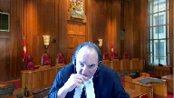
I just don’t quite understand when you talk about rescission, I think you said the trust could remain and so on.
And we’re talking about the dividends that went, I take it to the trust here.
So that’s all wiped out.
I’m just trying to understand where do we go?
Does the operating company at that point then get a chance to redo all of its tax planning and so on for the years in questioning in a different way so that we don’t have the problem with the dividends being taxed.
I just don’t understand, because there’s all kinds of things went on, loans being paid to the holding company and up to the operating company and all kinds of things going on.
And you just call those loans invalid.
You don’t say they should be rescinded.
They’re invalid because if the trust company, the trust never got the dividends, then they wouldn’t have made loans.
I mean, I don’t quite understand all this, but I’m just trying to, my simple question is, where does the tax department stand?
And where does your client stand or your client stand?
If in fact, this thing is rescinded, like where are we?
Do they get a chance to redo their tax planning for those years?
Speaker 2 (01:56:24): Justice, the simple answer to that is no, they don’t.
What happens is the money all goes back into the operating companies, in Mr. Collins’ case, Right Way Metals, and it just sits there.
And it sits there the way it was sitting there before this whole plan came about.
And however it’s paid out will be however it’s paid out.
It may be used for business expenses.
It may be paid out as dividends, in which case it’ll be taxable.
It may be paid out as salaries.
It may be used to buy another business.
The money all goes back into Right Way Metals, and it’ll be taxed or not taxed in the future, depending on how it’s used.
But no, there’s absolutely no opportunity to go back to 2008 and somehow redo the transaction.
Overlapping speakers (01:57:18): We don’t hear-
Speaker 2 (01:57:18): you.
I’m sorry Justice, I think you’re on mute.
Yeah, sorry.
Justice Moldaver (01:57:22): I was, probably I should be, but it seems to me what you’re saying is they could take steps now to engage in a different different forms of tax planning, nonetheless.
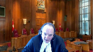
In other words, the money goes back to them and now you’re saying they could do other things that might have tax consequences that would be different.
Maybe I’m missing that.
Speaker 2 (01:57:45): Well, Justice, if you’re asking could they now engage another tax advisor and get them to come up with another tax plan, I suppose that’s possible.
It seems pretty unlikely given the history of the case that Mr. Collins would ever go do another tax plan.
But how can I put this?
The money just goes back into right-way metals.
What they do with it after that, no one knows.
They just deal with the money the way they’re going to deal with the money.
Justice Wagner (01:58:18): Right, anything else?
Overlapping speakers (01:58:25): Those are my submissions, Chief Justice, thank you.
Justice Wagner (01:58:28): Thank you very much.
And hereby, Mr. Taylor.
Speaker 1 (01:58:35): Yes Chief Justice, I have a couple of points if the court will indulge me and I’ll try to move quickly and keep it short.
The first point I’d like to make deals with the what I’ll call the somerer inference that my friend pointed to, the chamber’s judge’s inference that the only reason the CRA flagged these files for audit is the somerer case.
And the Crown’s argument, and I think the court has grasped it, is that is not faithful to the facts.
It’s very clear and I’m going to give you the reference, justices, you can look at it at your leisure.
In the record, tab 18, that’s the affidavit of Mr. Eugenio, Exhibit X, that’s a letter that was sent to the taxpayer in June of 2012.
So this is after the tax court decision in the somerer case, while it’s under appeal, while the CRA is still arguing that 75-2 would apply, which would make this transaction work.
And what they tell the taxpayer is we’re going to reassess you, you have income under 75-2, if we are wrong about 75-2 then that’s another reason for reassessing you and we are reassessing you under the GAR.
And this goes back to the 2009 documents that are in our condensed book.
The CRA was always coming after this taxpayer and there’s just no and there’s just no basis in the evidence whatsoever for the Chamber’s judge’s inference, which is solely based on the coincidental timing of the audit and the somerer case.
No basis in that, he’s just transposed that inference from the Palin case.
Justice Moldaver (02:00:13): I just wanted to ask a question on that factually.
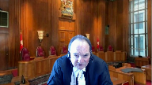
We’re sitting here as if Collins and Cochran are the only two cases that ever kind of engaged in this scheme.
I don’t know what the record is.
I mean, I got the impression that this was not just a two off happening, but that this had been going on for some period of time outside of the Indigenous context that you were talking about, which you told us earlier is very, very different.
CRA never intended to have that apply here.
And yet, is there any evidence as to how long this was going on before summer, or were these the only two companies that tried this?
Speaker 1 (02:00:56): Justice, there wasn’t evidence in the record.
There are other cases that were before the courts that are in the authorities.
There’s a case called Brent Kern, which was a lead case dealing with how 75-2 applied in this type of bounce-back plan.
And then there was the Satoma case.
And I can tell the court from experience, there were dozens and dozens, if not more than 100 cases that went to litigation across the country involving these types of plans.
And I just want to say, too, in response to something my friend said, the evil trust comment, that’s not a CRA term.
Evil trust is a term of art coined by tax planners because they know they are using a provision in these plans to do something it was not intended to do.
And if you look in our authorities, you’ll see those articles.
Evil trust is the tax planning jargon.
It’s not a CRA term.
The other two points I wanted to make had to do with slowcocks and with risk.
And the only point I want to make about slowcocks is my friend is right.
In slowcocks case, the court granted rectification and said the fact that you save taxes is not a bar.
But in slowcocks, and Justice Brown went through this in the Fairmont decision, in slowcocks, rectification was granted because the deed did not do what the taxpayer intended it to do.
It did something else.
And basically, what the respondents do here is they take the principle that tax savings is not a bar to getting relief when you otherwise meet the test, and they elevate it to tax saving alone independently meets the test.
And that’s a logical fallacy.
Please don’t fall into that.
The final comments I wanted to make in reply, well, actually, I have two more.
One relates to risk and the assumption of risk.
And I would say here, my friend attempts to subdivide the risks in an unsustainable way.
He says, well, Mr. Collins knew there was a bar risk.
He was told we are not lawyers.
He was told Parliament might change the law, but he was never told the court might come along and change the interpretation of 75-2.
And I would say, well, A, you can’t subdivide the risks.
He took a risk the plan wouldn’t work.
That risk materialized.
And B, I would submit in a self-assessing system, ultimately, the taxpayer is not going to be able to change the law.
And C, the taxpayer has to be taken to always accept the risk, however remote, that the courts will come out with a decision that no one anticipates.
And frankly, the Treasury should not be asked to ensure everyone against that risk.
And the final point I want to make is on alternative remedies.
My friend says, there’s no evidence.
There’s no evidence.
Alternative remedies is a question of law.
It’s not a question of evidence.
All you do by leading evidence or by requiring the Crown to present evidence is you invite the inquiry into, are these guys going to get the remedy or not?
That’s not the analysis.
The analysis is, what is the scope and extent of the remedy?
Is it good enough, if they get it, to do what they want it to do, what they need?
That’s the analysis.
It’s not an evidentiary question.
That’s simply going in the wrong place.
Thank you.
Those are my submissions.
Your time is up.
Justice Wagner (02:04:08): is up.
Thank you very much.
I’d like to thank council for your submissions.
The court will take the case under advisement and the court is adjourned until tomorrow morning at 10.30.
Thank you.